BIOLOGICAL DIVERSITY: ANIMALS
II
Table of Contents
Coelomates: Animals
with Internal Body Cavities |
Phylum
Mollusca: Clams, Scallops, and Squids| Phylum
Annelida: Segmented Worms
Phylum Arthropoda:
Segmented Bodies with Segmented Appendages | Deuterostomes
and Protostomes | Learning
Objectives | Terms
Review Questions |
Links
Coelomates:
Animals with Internal Body Cavities | Back
to Top
Coelomates are animals that have internal body
cavities, or coeloms.
Humans are coelomates, we have an abdomenal cavity (digestive organs,
some of the excretory and reproductive organs) and a thoracic cavity
(heart and lungs). Coelomates also form a variety of internal and
external skeletons. External skeletons and coeloms appeared during
the Cambrian-Ordovician
time, as shown in Figure 1. These skeletons offered several
advantages to their producers:
- Secretion of a mineral shell that allowed the
animal to use the shell as a mineral repository.
- Protection from drying out in the intertidal
zone during low tides.
- Protection from predators.
- Sites for anchoring muscle attachments,
offering new patterns of locomotion and increased
strength.
|
Figure 1. First
appearances and relative diversity (width of shaded area)
for major groups of animals. Image
from Purves et al., Life: The Science of Biology, 4th
Edition, by Sinauer Associates (www.sinauer.com)
and WH Freeman (www.whfreeman.com),
used with permission.
|
|
|
Phylum
Mollusca: Clams, Scallops, and Squids | Back
to Top
The phylum Mollusca contains over 100,000 species
with a variety of body forms and lifestyles. In mollusks, the coelom
is reduced and limited to the region around the heart.
The Mollusk body first appeared during the
Cambrian
Period. All mollusks have:
- a visceral mass containing internal organs,
including the digestive tract, paired kidneys, and reproductive
organs.
- a mantle
that surrounds but does not cover entirely the visceral mass and
secretes a shell (if one is present). The mantle also contributes
to formation of gills or lungs.
- a head/foot region containing sensory organs
and a muscular structure (foot) used for locomotion.
The foot is a muscular structure used for
locomotion, attachment to a substrate, food capture, or a
combination of functions.
- A radula is an organ that bears many rows of
teeth and is used for grazing on food.
- The nervous system consists of several
ganglia
connected by nerve
cords.
Most mollusks have an open circulatory system: a
heart that pumps hemolymph through vessels into a hemocoel. Blood
diffuses
back into the heart and is pumped out to the body again. Some
mollusks are slow moving, and have with no head, while others are
active predators that have a head and sense organs. Figure 2 shows
the hypothesized evolutionary relationships of the different groups
of molluscs.
|
Figure 2. Suggested evolutionary
relationships of the Mollusca. Image
from Purves et al., Life: The Science of Biology, 4th
Edition, by Sinauer Associates (www.sinauer.com)
and WH Freeman (www.whfreeman.com),
used with permission.
|
|
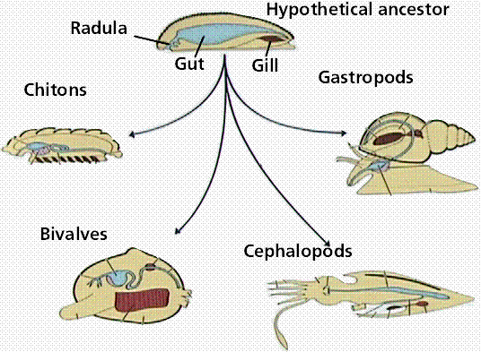
|
Classification of the Mollusca
The Class Polyplacophora
Chitons, shown in Figure 3, are in the taxonomic
class Polyplacophora. They have a shell consisting of eight
overlapping plates. A ventral muscular foot is used for creeping
along the substrate, or for clinging to rocks. A chiton feeds by
scraping algae and other plant food from rocks with its
well-developed radula.
The Class Gastropoda
The class Gastropoda includes snails, terrestrial
slugs, whelks, conchs, periwinkles, sea hares, and sea slugs. Most
gastropods are marine,
although some there are freshwater and terrestrial forms. Many
gastropods are herbivores
that use their radula to scrape food from surfaces. Carnivorous
gastropods use their radula to bore through a surface, such as a
bivalve shell, to obtain food. Most gastropods have a well developed
head with eyes and tentacles projecting from a coiled shell that
protects the visceral mass, as shown in Figure 4. The coiled shells
of gastropods are often quite commonly found as fossils. One genus,
Turetella, occurs in such quantities in a type of rock that
the rock is known as "Turetella agate". However, not all
gastropods have shells, the nudibranchs (sea slugs) and terrestrial
slugs lack shells.
In aquatic gastropods, gills are found in the
mantle cavity; in terrestrial gastropods, the mantle is richly
supplied with blood vessels and functions as a lung when air is moved
in and out through respiratory pores. Terrestrial gastropod embryonic
development does not go through a swimming larval stage, as is the
case in aquatic gastropods. For terrestrial snails, their shell not
only offers protection but also prevents desiccation (drying out).
The muscular foot contracts in peristaltic waves from anterior to
posterior causing secretion of a lubricating mucus.
|
Figure 4. Anatomy of gastropod.
Top Image from Purves et al., Life: The
Science of Biology, 4th Edition, by Sinauer Associates
(www.sinauer.com)
and WH Freeman (www.whfreeman.com),
used with permission. Bottom image: Snail Shells, Giant
Apple Snail & Others. Pretre, J.
G. 1850 Animal Kingdom: Vintage Illustration from the Lycos
Image Gallery.
|
|
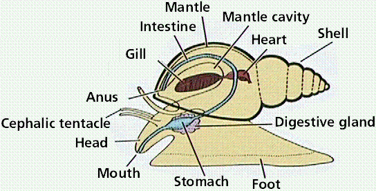
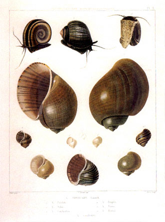
|
Terrestrial gastropods are hermaphroditic. In
premating behavior, they meet and shoot calcareous darts into each
other's body wall. Each inserts a penis into the vagina of the other,
providing sperm for future fertilization of eggs. Eggs are deposited
in the soil and development proceeds without formation of a larval
stage, a common theme in some terrestrial invertebrates.
Hermaphroditism assures that any two animals that meet can mate,
which is especially useful in slow-moving animals.
The Class Bivalvia
The class Bivalvia consists of clams, oysters,
mussels, and scallops. Members of this class have two-part shells
that are hinged and closed by powerful muscles. The presence of
shells in this group has yielded an impressive fossil record. The
bivalves have no head, no radula, and little cephalization,
as can be seen in Figure 5. Clams use their hatchet-shaped foot for
burrowing; mussels use it to produce threads to attach to objects.
Scallops can both burrow or swim. A rapid closing and opening of
their two valves releases water in spurts.
The bivalve shell is secreted by the mantle. The
shell is composed of protein and calcium carbonate with an inner
layer of pearl. Pearls form as layers of shell-forming material
deposited about a foreign particle lodged between the mantle and the
shell. A compressed muscular foot projects down from shell. By
expanding the tip, the foot pulls the body after it. Beating cilia of
the gills cause water to enter the mantle cavity by way of the
incurrent siphon and to exit by way of the excurrent siphon. While
cilia of gills move water through the mantle cavity, gills also
capture particles in water and move them toward the mouth. From the
mouth food goes to the stomach, then to the intestine, which passes
through the heart and ends at the anus.
Bivalves, like other mollusks, have an open
circulatory system. Their nervous system consists of three pairs of
ganglia. Two excretory kidneys below the heart remove ammonia waste
from the pericardial cavity into the mantle cavity, from which it
will leave the body.
Sexes in class Bivalvia are separate. The gonad is
located around the coils of the intestine. Certain clams and annelids
have the same type of larva, hinting at a possible evolutionary
relationship between the two groups.
|
Figure 5. Anatomy of a bivalve.
Image from Purves et al., Life: The
Science of Biology, 4th Edition, by Sinauer Associates
(www.sinauer.com)
and WH Freeman (www.whfreeman.com),
used with permission.
|
|
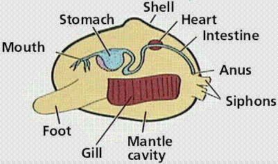
|
Fossil Record of Bivalves
Since they have hard shells, the fossil record of
this class is remarkably good. Hard shells (or hard parts) are one of
the features that make an organism a better candidate to become a
fossil. Gastropods, another class of the phylum Mollusca, also become
more prevalent in the Ordovician seas. Ordovician deposits yield
snails, as well as large, sedentary gastropods such as Maclurites,
shown in Figure 6.
During the Mesozoic era, bivalves became more abundant and important
parts of reefs. They would would remain important parts of the marine
fauna throughout the Mesozoic. These bivalves, specifically the
rudistids (Figure 7), began to play a larger role in reef formation.
Rudistid reefs are so named because the rudistid bivalves were the
dominant reef-forming organisms. Biodiversity was reduced by mass
extinctions at the end of the Triassic and Jurassic periods of the
mesozoic era.
The bivalves recovered from the Jurassic extinctions and again
became major reef-formers in the numerous shallow marginal seas that
encroached onto the continents during the Cretaceous, as shown by
Figure 8.
|
Figure 8. Top:
Reconstruction of a Cretaceous seafloor. Note the large
ammonite on the right, the belemnites in the center, and the
gastropods and bivalves on the seafloor. Image from
http://seaborg.nmu.edu/earth/cret/cre01b.html.
Bottom: Exogyra sp., a bivalve from
the del Rio Formation in Texas. In this view we see the top
of one of the shells. The lower shell was usually quite
different in shape. Image from
http://www.vvm.com/~jevans/dr01.html.
|

|

|
The Class Cephalopoda
The class Cephalopoda (literally "head-footed")
includes squids, cuttlefish, octopuses, and nautiluses (and extinct
relatives, the goniatites, ammonoids, and ammonites). The presence of
a shell in many representatives of this class has yielded an
impressive fossil record.
Squids and octopuses can squeeze water from their
mantle cavity out through a funnel (shown in Figure 9), thus
propelling them with a form of jet propulsion. Surrounding their head
are tentacles with suckers that can grasp prey and deliver it to a
powerful beak/mouth. Cephalopods in general have well-developed sense
organs, including focusing camera-type eyes. Most cephalopods,
especially octopuses, have well-developed brains and show a capacity
for learning. Nautiluses are enclosed in shells, squids have a shell
that is reduced and internal, while octopuses lack a
shell.
Squids and octopuses possess ink sacs from which
they squirt a cloud of ink, as a means of escaping predators. Squids
possess a vestigial skeleton under the mantle, called the pen, which
surrounds the visceral mass. A squid has three hearts, one pumps
blood to internal organs; two pump blood to the gills in the mantle
cavity. Gonads make up a large portion of the visceral mass.
Cephalopds have separate sexes. Spermatophores contain sperm, which
the male passes to the female mantle cavity by way of one of his
tentacles. After fertilization, eggs are attached to the substratum
in strings containing up to 100 eggs.
|
Figure 9. Top left : Anatomy of a
cephalopod. Image from Purves et al., Life: The Science
of Biology, 4th Edition, by Sinauer Associates
(www.sinauer.com)
and WH Freeman (www.whfreeman.com),
used with permission.
Top right:
Bottom: Cuttlefish, at the Smithsonian's
National Zoological Park in Washington, D.C.
Smithsonian Photo by Jessie Cohen. ©
1992 Smithsonian Institution.
|
|
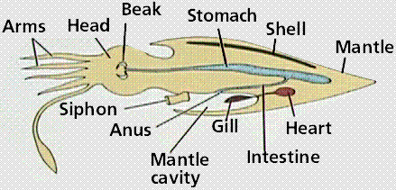
|
|
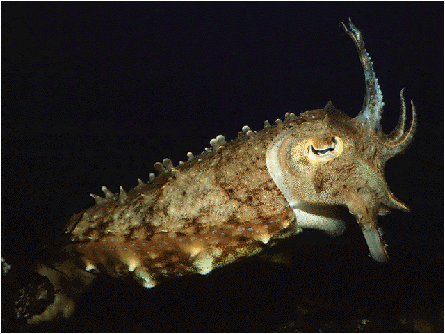
|
Fossil Record of Cephalopods
During much of their evolutionary history
cephalopods possessed a hard shell. Their abundance, the presence of
a shell, and the environments they lived in led to an excellen fossil
record for the group.
The Ordovician period saw the exolution and spread
of coiled, swimming cephalopods. This group, the nautiloids (shown in
Figure 10), resembles somewhat their living distant relatives the
chambered nautilus and squids.
|
Figure 10. Lituites littuus, an
odd nautiloid fossil from the Ordovician of China. Image
from http://www.extinctions.com,
used with permission.
|

|
During the Devonian period Cephalopods ammonoid group known as the
goniatites appeared. These coiled, chambered nautiloids, some of
which are shown in Figure 11, left a great many fossils, some of
which are quite aesthetically appealing.
|
Figure 11. Michelanoceras,
assorted ammonites from the Devonian-aged Atlas Mountains
Formation, Morocco. In this specimen
the surrounding matrix has been cut away and the fossils cut
to reveal the inner chambers. Image from http://www.extinctions.com,
used with permission.
|
|
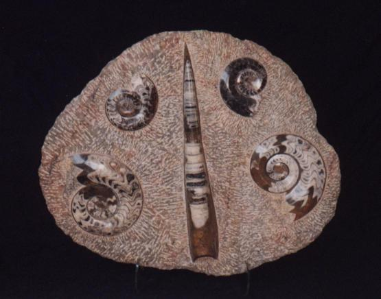
|
The ammonoids underwent three separate diversifications from a
nautiloid-like stock. In each case the fold pattern of sutures became
more complex. These sutire patterns are fantastic characters for
identifying species, making ammonoids excellent index fossils. The
first of these occurrences was the goniatites, a group that ranged
from the Devonian to the Permian. The ceratites are a Triassic group,
while the last group, the ammonites ranged from the Triassic
to the Cretaceous.
Ammonoids finally went extinct in the great end-of-the-Cretaceous
extinction. Nautiloids are represented today by the Nautilus.
Differences between the groups are shown in Figure 12.
The cephalopods recovered from the extinction of the goniatites at
the close of the Paleozoic era and developed a remarkably similar
group, the ceratites. These coiled, chambered animals, such as the
one shown in Figure 12, had slightly more complex sutures than did
the goniatites. However, the Ceratites also went extinct during the
middle Mesozoic era.
During the Jurassic, the cephalopods once again produced a new
coiled, chambered form, the ammonites, shown in Figure 13 and 14.
Suture patterns of these forms were even more elaborate than those
found in the Triassic ceratites. The belemnites were straight-shelled
cephalopods with elaborate suture patterns. Both ammonites and
belemnites survived the Jurassic extinctions and flourished during
the Cretaceous period.
Ammonites continued their dominance, as did their relatives the
straight-shelled belemnites. Modern teleost fish appeared during the
Cretaceous and may have competed for the same prey as the ammonites.
The teleost fish were apparently stronger and swifter swimmers than
the fish of the Jurassic. Some paleontologists speculate that the
extinction of ichthyosaurs during the Cretaceous may have been
hastened by the rise of these new faster fish that would have been
difficult for the ichthyosaurs to catch and eat.
Baculites, a genus of straight-shelled
cephalopods, was particularly abundant in the Cretaceous seas. Note
the elaborate suture patterns in the fossil specimen below. Common
fossils in the Cretaceous rocks, the cephalopods were major victims
(along with the gastropod group the rudistids) of the terminal
Cretaceous extinction event. Squid, octopus, and the chambered
nautilus are the remnants of this once flourishing group of molluscs.
Phylum
Annelida: Segmented Worms | Back
to Top
The phylum Annelida contains segmented worms (such
a the earthworm, shown in Figure 16). The development of segmented
bodies allowed the formation of specialized functions in different
segments. Annelids have an enlarged coelom to accommodate more
complex internal organs. The well-developed, fluid-filled coelom and
the tough integument act as a hydrostatic
skeleton. There are about 12,000 marine,
freshwater, and terrestrial species usually divided into three
taxonomic classes. Similarities of larval
forms to Mollusks suggest annelids share an common ancestral
group.
Annelids have a closed circulatory system with
blood vessels running the length of the body and branching into every
segment. Closed circulatory systems are more efficient than open ones
for moving materials within a body. The annelid nervous system
consists of a brain connected to a ventral solid nerve cord, with a
ganglion in each segment. Annelids have a complete digestive system
that include a pharynx, stomach, intestine, and accessory glands.
Excretory nephridia
in each segment collect waste material from coelom and excrete it
through the body wall.
|
Figure 16. Top: anatomy of an earthworm.
Lower: cross-section through the earthworm body. Note the
presence of a coelom. Images from
Purves et al., Life: The Science of Biology, 4th
Edition, by Sinauer Associates (www.sinauer.com)
and WH Freeman (www.whfreeman.com),
used with permission.
|
|
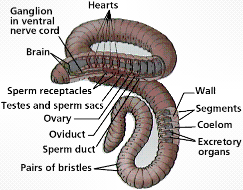
|
|
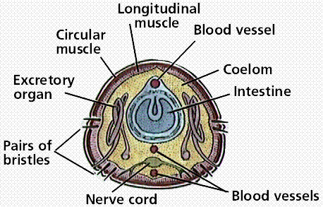
|
Classification of the Annelida
The Class Polychaeta
Most annelids belonging to the taxonomic class
Polychaeta are marine and possess parapodia and setae. Parapodia are
paddlelike appendages used in swimming that also serve as respiratory
organs. Setae are bristles, attached to parapodia, that help anchor
polychaetes to their substratum and also help them move. Clam worms,
such as Nereis, are active predators.
Many have well-developed cephalization, with a head having
well-developed jaws, eyes, and other sense organs. Sedentary filter
feeders possess tentacles with cilia to create water currents and to
select food particles. Only during breeding do polychaetes have
reproductive organs. Polychaet zygotes develop into a type of larva
similar to that produced by marine clams.
The Class Oligochaeta
The class Oligochaeta includes earthworms, that
tend to have their few setae protruding in clusters directly from
their body. Earthworms have poorly developed heads or parapodia.
Locomotion is by coordinated movement of the body muscles and
assistance of their setae. When longitudinal muscles contract,
segments bulge and setae protrude and anchor into the soil. Circular
muscles contract, causing the worm to lengthen, setae are withdrawn
and the segment moves forward.
Earthworms reside in moist soil where a moist body
wall facilitates gas exchange. Earthworms are scavengers that extract
organic remains from the soil they eat. A muscular pharynx
draws food into the mouth. Ingested food is stored in a crop and
ground up in a muscular gizzard. The dorsal surface of the intestine
is expanded into a typhlosole that allows more surface area for
digestion. External segments correspond to internal septa (walls)
separating each body segment.
The earthworm excretory system has coiled
nephridia tubules in each segment with two openings: one is a
ciliated funnel that collects coelomic fluid, and the other is an
exit in the body wall. Between the two openings, the coiled nephridia
tubule allows removal of waste materials from blood
vessels.
Red blood is moved anteriorly by a dorsal blood
vessel and pumped by five pairs of hearts (sometimes referred to as
aortic arches) to a ventral vessel. Earthworms are hermaphroditic,
having both testes with seminal vesicles, and ovaries with seminal
receptacles. Mating involves the worms lying parallel to each other
facing opposite directions and exchanging sperm. Each worm possesses
a clitellum that then secretes a mucus, protecting sperm and eggs
from drying out. Embryonic development lacks a larval
stage.
The Class Hirudinea
The class Hirudinea includes leeches. Most are
freshwater, but a few are marine or terrestrial. Each body ring has
several transverse grooves. Leeches possess a small anterior sucker
around the mouth and a larger posterior sucker. Although some are
free-living predators, most are fluid feeders. Bloodsuckers keep
blood from coagulating by hirudin, an anticoagulant in their saliva.
Leeches were commonly used in early medicine to "bleed" the patient.
Phylum
Arthropoda: Segmented Bodies with Segmented Appendages |
Back to
Top
The phylum Arthropoda contains animals with
segmented appendages on their body segments. Arthropods occupy every
habitat, and are in many respects the most successful animal group on
Earth. There are conservatively over 1 million species of living
arthropods. Biologist E.O. Wilson estimates there are 10 million
species, 9 million of which are arthropods. Certain groups of
arthropds have extremely complete fossil records.
Arthropod features that have contributed to their
success include:
- A hard exoskeleton,
a strong but flexible outer covering composed primarily of the
carbohydrate chitin.
This functions in protection, attachment for muscles, locomotion,
and prevention of desiccation.
- Presence of jointed appendages.
Trilobites,
which flourished during Cambrian Period and were important animals
in marine ecosystems for the remainder of the Paleozoic
Era, had a pair of appendages on each
body segment. Modern arthropod appendages are specialized for
walking, swimming, reproduction, etc. These modifications account
for much of the diversity and success of arthropods.
- A complex nervous system with a brain
connected to a ventral solid nerve cord. The head bears various
sensory organs. Compound eyes have many complete visual units,
each of which collects light independently. The lens of each
visual unit focuses the image on light sensitive membranes of a
small number of photoreceptors within that unit. In simple eyes
(like our own), a single lens brings the image to focus into many
receptors, each of which receives only a portion of the image.
- A unique respiratory system that employs a
variety of respiratory organs. Marine arthropods utilize gills
composed of a vascularized, thin-walled tissue specialized for gas
exchange. Terrestrial forms have book lungs (e.g., spiders) or
tracheae. (e.g., insects). Book lungs are invaginations to serve
in gas exchange between air and blood. Tracheae are air tubes that
serve as ways to deliver oxygen directly to cells.
- A complex, yet adaptable, life cycle.
Metamorphosis
is a drastic change in form and physiology that occurs as an
immature stage becomes an adult. Metamorphosis contributes to the
success of arthropods because the larval stage eats food and lives
in environments different from the adult; reducing competition
between immature and adults of a species. Reduction in competition
thus allows more members of the species to exist at one
time.
The arthropod body consists of three major
collections or zones of body segments:
- head
- thorax
- abdomen
Classification of Arthropods
Due to their great diversity of appendages,
lifestyles, and other features, arthropods are usually separated into
several subphylums.
The Subphylum Chelicerata
The subphylum Chelicerata includes spiders,
scorpions, ticks, mites, horseshoe crabs, etc. The first pair of
appendages are chelicerae, second pair are pedipalps, and the next
four pairs are walking legs. Chelicerae are appendages that function
as feeding organs. Pedipalps are feeding or sensory in function;
although in scorpions, they are large pincers. All appendages attach
to a cephalothorax, a fusion of the head and thoracic regions. The
head lacks antennae, mandibles, or maxillae appendages.
The Class Merostomata
The class Merostomata contains the extinct "sea
scorpions" (or eurypterids) and the extant (living) horseshoe crabs.
Eurypterids are extinct, but were important elements of faunas
200-500 million years ago during the Paleozoic Era. Some were huge,
reaching a length of over 10 feet. Some eurypterids may have been
amphibious, emerging onto land for at least part of their life.
Horseshoe crabs are an ancient group consisting today of only 5
species. Members of this class have a large shield that covers the
cephalothorax. The compound eyes are reduced. The second pair of
appendages, the pedipalps, resemble walking legs. They have a long,
spike-like appendage called a telson that projects from the rear of
their bodies. Respiration is via book gills (precursors to book
lungs?).
The horseshoe crab genus Limulus is a
familiar sight along the east coast of North America. The anterior
shield is a horseshoe-shaped carapace with two compound eyes. The
long, unsegmented telson projects to the rear. They possess book
gills that resemble the pages in a book. Limulus is considered
a living fossil due to its great similarity to fossil forms from the
Paleozoic Era.
The Class Arachnida
The class Arachnida includes over 60,000 described
species (and most likely a very large number of as yet undescribed
ones) of spiders (around 35,000 species), mites and ticks (25,000
species), scorpions (1200 species), and other forms. Nearly all
arachnids are terrestrial.
Arachnids have a cephalothorax covered with a
carapace-like shield. The abdomen may be segmented or unsegmented.
Appendages on the abdomen are absent or modified, for example forming
the spinnerets of spiders. Respiration is via tracheae or book lungs.
Scorpions are arachnids. They are the oldest
terrestrial arthropods known from fossils. All scorpions are
nocturnal and spend most of the day hidden under a log or rock. Their
pedipalps are large pincerlike appendages, and their abdomen ends in
a stinger containing venom.
Ticks, shown in Figure 17, are parasites that suck
blood and sometimes transmit diseases. Chiggers are larvae of certain
mites and feed on the skin of vertebrates.
|
Figure 17. American Dog Tick,
Dermacentor variabilis (SEM x50). Note the arthropod
characteristics, jointed appendages, segmented body, etc.
This image is copyright Dennis Kunkel at www.DennisKunkel.com,
used with permission.
|
|
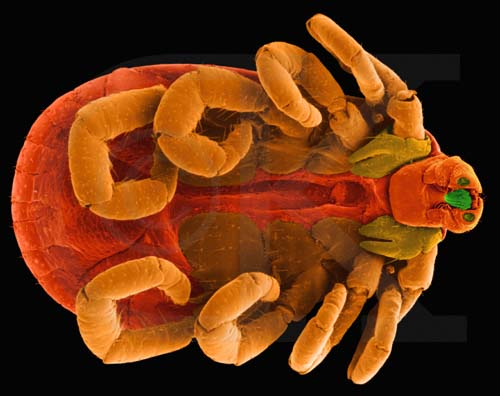
|
Spiders, shown in Figure 18, have a narrow waist
separating the cephalothorax from the abdomen. Spiders have numerous
simple eyes rather than compound eyes. The chelicerae are modified as
fangs with ducts from poison glands. The abdomen has silk glands used
to spin a web to trap prey. Invaginations of the body wall form
lamellae (pages) of the book lungs; air flows across the lamellae in
the opposite direction from blood flow to exchange gases more
efficiently.
|
Figure 18. Top: A wolf spider (left) and
a black widow spider (right). Images are from
http://www.conservation.state.mo.us/nathis/arthropo/mospider/spider.html;
Middle: Jumping Spider, Plaexippus paykulli (SEM
x150). Note the numerous compound eyes (red) and jointed
feeding appendages (yellow). This image is copyright Dennis
Kunkel at www.DennisKunkel.com,
used with permission; Bottom: Spider spinneret (silk
secreted from piriform gland spigot, Spiny Back Spider,
Castercantha sp.) (SEM x3,740). This image is
copyright Dennis Kunkel at www.DennisKunkel.com,
used with permission.
|
|
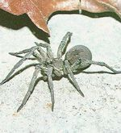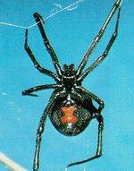
|
|
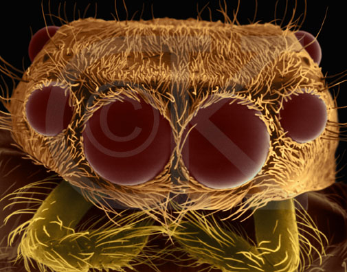
|
|
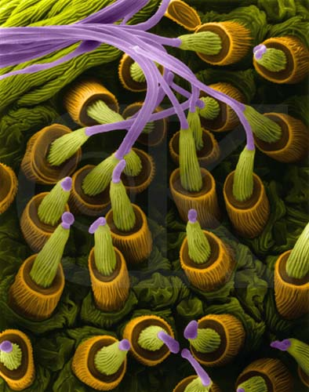
|
The Subphylum Crustacea
The Subphylum Crustacea, shown in Figure 19,
contains 30,000 mostly marine species. A few species live in
freshwater. Lobsters, crabs, crayfish, shrimp, copepods, barnacles,
and several other groups of organisms belong to this subphylum. All
crustaceans possess two pairs of antennae, a pair of
mandibles, a pair of compound eyes (usually on
stalks), and two pair of maxillae on their heads, followed by a pair
of appendages on each body segment. Crustacean
bodies usually have a head, thorax, and abdomen.
Crustaceans utilize gills for gas
exchange.
|
Figure 19. Top: Anatomy of
crustacean. Image from Purves et al.,
Life: The Science of Biology, 4th Edition, by Sinauer
Associates (www.sinauer.com)
and WH Freeman (www.whfreeman.com),
used with permission; Middle: Marine Copepod (Crustacean),
Pleuromamma sp. (SEM x44). Note the features of a
crustacean on this specimen. This image is copyright Dennis
Kunkel at www.DennisKunkel.com,
used with permission; Bottom: Marine Copepod (Crustacean),
Actitius sp. (SEM x44). This
image is copyright Dennis Kunkel at www.DennisKunkel.com,
used with permission.
|
|
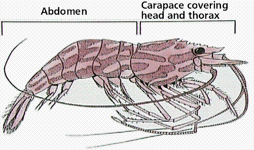
|
|
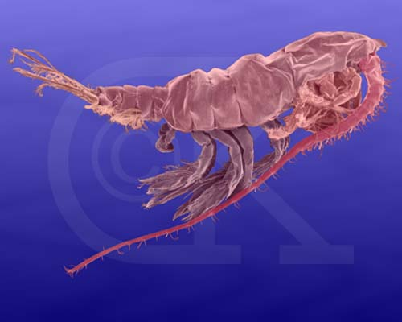
|
|
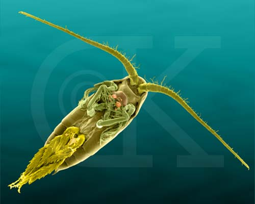
|
Most crustaceans are free-living, but some are
sessile and a few are even parasitic.
Some crustaceans filter tiny plankton or bacteria from the water,
while others are active predators. A few crustaceans scavenge
nutrients from detritus.
Many species, including lobsters, crayfish,
barnacles, and crabs are economically important (yum, yum). Krill,
and a few other species, form the base of
extremely important marine food
chains. Still others are crucial in
recycling nutrients trapped in the bodies of dead organisms.
The subphylum contains several taxonomic classes.
We will focus on one, the class Malacostraca, which includes the
shrimp, lobsters, etc.
The Class Malacostraca
The class
Malacostraca is the largest taxonomic class of
Crustaceans, having over 20,000 primarily marine species. Some
malacostracans are freshwater, while others occupy diverse
terrestrial habitats. Typical malacostracans include sowbugs, krill,
and a very large order, the Decapoda, that contains many kinds of
shrimp, crabs, and crayfish. Malacostracans typically possess a body
with eight thoracic and six abdominal body segments, each bearing a
pair of appendages. Class Malacostraca contains a number of
economically significant species, such as edible lobsters, shrimp,
crayfish and crabs. Many malacostracans contribute to
plankton
and as such are at the base of an immensely important marine food
chain.
The Subphylum Uniramia
This subphylum contains arthropods that have
unbranched appendages. The uniramian body has two or three tagmata,
and an abdomen that has many segments. Appendages in the head region
include paired antennae and mandibles, and also two pairs of
maxillae. Gas exchange is by means of tracheae and spiracles. This
subphylum include millipedes, centipedes, and insects.
The Class Chilopoda
This taxonomic class includes 20 families and more
than 2500 species of centipedes, all terrestrial. Most centipedes are
small, but a few can attain a length of up to 10 inches (25 cm).
Centipedes have bodies are made up of a chain of many (up to 177)
flattened segments. With the exception of the segment behind the head
and the last body segment, each segment has a single pair of
appendages (legs). The appendages of the first body segment have been
modified to form large, poisonous fangs that are used to capture
prey. The bite of a large centipede, however, can be painful to an
adult and dangerous to a small child.
The Class Diplopoda
Millipedes, Figure 20, comprise this class
containing some 8000 species. Bodies of members of this class are
made up of numerous segments. Millipedes lack poisonous fangs and do
not bite. Prerdators are discoraged by the millipede's rolling into a
defensive ball. Production of poisonous or foul-smelling substances
also serve to disuade any would be predators. Most millipedes are apt
burrowing herbivores or scavengers.
|
Figure 20. Millipede (SEM x48). Note the
arthropod features on this millipede. This image is
copyright Dennis Kunkel at www.DennisKunkel.com,
used with permission.
|
|
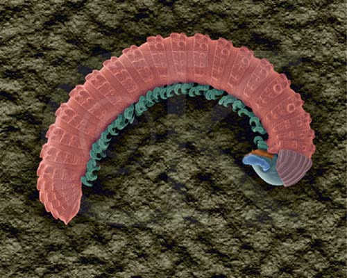
|
The Class Insecta
Insects, Figure 21, are the largest group, with
probably over one million identified and named species (and
undoubtedly a greater number as yet unknown to us). Insects live in
almost all terrestrial and freshwater habitats, with a few species
living in the oceans.
|
Figure 21. Image of a Dewy Dragonfly
taken by Bill Everitt (L), and Cockroach from Madagascar
taken by Russell Grundke, both obtained from PicturesNOW!
(R)
|
|
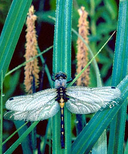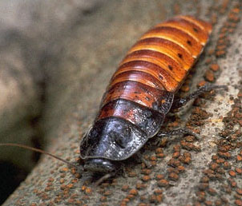
|
Many insects have some thoracic appendages
modified for flight, as shown in Figure 21, 22. Insects are important
as pollinators
for flowering plants, as well as for the damage they do annually to
crops, and the diseases they transmit (malaria, some forms of
encephalitis, Dengue Fever, the West Nile virus, etc.).
|
Figure 22. Top: Anatomy of the insect
body. Image from Purves et al.,
Life: The Science of Biology, 4th Edition, by Sinauer
Associates (www.sinauer.com)
and WH Freeman (www.whfreeman.com),
used with permission; Bottom: Fruit Fly, Drosophila
melanogaster, (SEM X60). Note the insect bopdy
organization into head, thjorax (with wings), and a
segmented abdomen. The compound eye of insects is also quite
prominent. This image is copyright Dennis Kunkel at
www.DennisKunkel.com,
used with permission.
|
|
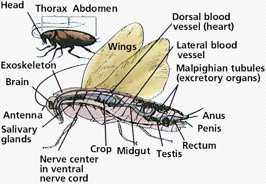
|

|
Insects display a wide huge variation in body
styles, although there seems to be a size limit on the insect-style
of body organization. Common features shared by most living insects
include:
- body composed of three tagmata
- head
- thorax
- abodmen
- one pair of relatively large compound
eyes
- usually three ocelli located on the
head
- one pair of antennae on the head
- mouthparts consisting of a labrum, a pair of
mandibles, a pair of maxillae, a labium, and a tonguelike
hypopharynx
- two pairs of wings derived from outgrowths of
the body wall
- three pairs of walking legs
Insects have a complete, complex digestive system.
They exchange gases through a tracheal system, with external openings
called spiracles dividing into finely branched tubules that carry
gases directly to metabolizing tissues. Aquatic forms may exchange
gases through the body wall or may have various kinds of gills.
Excretion of nitrogenous waste takes place via Malpighian tubules.
The nervous system of insects is complex, including a number of
ganglia and a ventral, double nerve cord. Sense organs are complex
and acute. In addition to ocelli and compound eyes, some insects are
quite sensitive to sounds, and their chemoreceptive abilities are
excellent.
Growth patterns are quite variable. Some insects
hatch from eggs as miniature adults, which in turn shed their
exoskeleton. Most insect species have newly hatched young that are
completely different in appearance from adults. These larval forms
usually live in different habitats, eat different foods, and look
completely different from their adult stages. When larval growth is
completed, the larva stops feeding and builds a case or cocoon around
itself. In this nonfeeding condition (pupa or chrysalis) the larva
undergoes a complete transformation or "metamorphosis" of its body
form, eventually emerging as a fully-formed adult.
Insects are very valuable to us. While insects eat
our food, feed on our blood and skin, contaminate our dwellings, and
transmit diseases, we could not exist if thety were not here. Insects
are a vital part of our ecosystem, functioning in:
- pollination of many flowering
plants
- decomposition of organic materials
- recycling of carbon, nitrogen, and other
essential nutrients
- control of populations of harmful invertebrate
species (including other insects)
- direct production of certain foods like
honey
- manufacture of useful products such as silk
and shellac
So, have you hugged a bug today?
Deuterostomes
and Protostomes | Back
to Top
Protostomes
(mollusks, annelids, and arthropods) develop so that the first
opening in the embryo is the mouth (protostome = first mouth).
Protostomes are bilaterally
symmetrical, have three germ layers, the
organ level of organization, the tube-within-a-tube body plan, and a
true coelom. The coelom, a body cavity between the digestive tract
and body wall completely lined by mesoderm allows the digestive
system and body wall to move independently. Because of this, internal
organs can be more complex. Coelomic fluid assists respiration and
circulation by diffusing nutrients, and excretion by accumulating
wastes. This fluid functions in place of several organ systems in
higher animals such as mammals. The coelom may serve as a storage
area for eggs and sperm, facilitating development of these gametes
within the animal body. Coelomic fluid protects internal organs and
also serves as a hydrostatic skeleton. Protostomes develop their
embryo by spiral cleavage, as shown by Figure 23.
Deuterostomes (echinoderms and chordates) develop
the anus first, then the mouth at the other end of the embryo.
Deuterostomes are coelomate animals these embryological
characteristics:
- Radial cleavage (Figure 22) in embryonic cell
division: the daughter cells sit on top of previous cells.
- Fate of cells is indeterminate; if embryonic
cells are separated, each one develops a complete
organism.
- The blastopore is associated with the anus,
and the second embryonic opening is associated with the
mouth.
|
Figure 23. Differences in cleavage
between the embryos of protostomes and deuterostomes.
Images from Purves et al., Life: The
Science of Biology, 4th Edition, by Sinauer Associates
(www.sinauer.com)
and WH Freeman (www.whfreeman.com),
used with permission.
|

|

|
- The Five
Kingdoms A table summarizing the kingdoms of living
things.
- The
Radiation of the First Animals Dr. Jere Lipps presents a well
illustrated look at early animal evolution.
- Introduction
to the Metazoa: Animals, Animals, Animals! This University of
California Berkeley Museum of Paleontology site offers excellent
information about the evolution and diversity of various animal
groups.
- Animal
Diversity Web A superb site from the University of Michigan's
zoology folks that organizes and presents information and media
about the various groups of animals. One problem I have with this
site is that most of the images of animals are not visible off
campus. However, as a primarily text-based site this is well worth
the visit.
- The Cephalopod
Page This page offers a number of links to an Introduction to
Cephalopods, Cephalopod Species, Information, and Photographs,
Sources of Live Cephalopods and much more. Plus, your cursor tuns
into a squid that shoots ink all over your screen. Worth the visit
just for the squid!
- The Virtual Silurian
Reef Harley Davidson's aren't the only cool things to come out
of Milwaukee. The exhibit from the Milwaukee Public Museum takes
you through a reconstruction of an ocean reef as it existed
several hundred million years ago during the Silurian Period.
- Common
Missouri Spiders An interesting page with illustrations and
information about the spiders of the Show Me State. Show me the
Spiders!
- Insects
in Motion Wonderful QuickTime movies of insects moving,
feeding, and otherwise demonstrating motion.
All text contents ©1995, 1999, 2000, 2001, 2005 by M.J. Farabee.
Use for educational purposes is encouraged.
Back to Table of
Contents
Email: mj.farabee@emcmail.maricopa.edu
Last modified:
The URL of this page is:


{kind=link}
{kind=link}